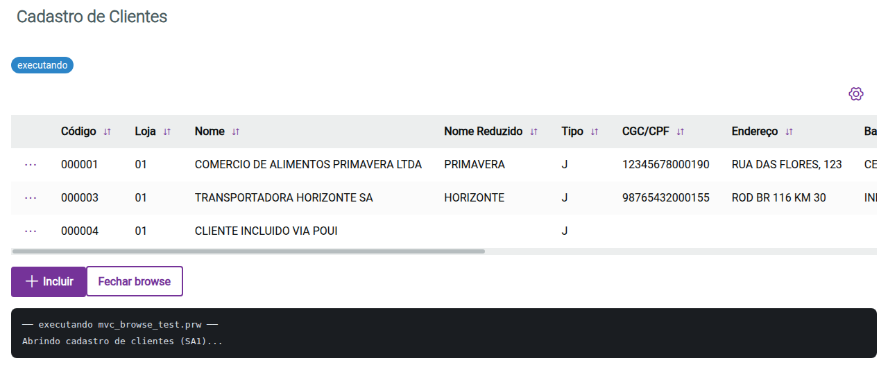

Compilador, VM e ferramentas open-source para AdvPL/TLPP — a linguagem do TOTVS Protheus. 100% Go, sem CGO, sem dependências externas.
curl -fsSL https://raw.githubusercontent.com/peder1981/AdvPP/master/install.sh | sh
advplc serve programa.prw compila e roda um programa AdvPL direto no navegador — FWMBrowse vira uma tabela de verdade lendo o dicionário SX3, com console e diálogos em tempo real. Sem appserver Protheus, sem instalação de banco.

Um compilador completo — lexer, pré-processador (com #xCommand real), parser, bytecode, VM — mais um conjunto de ferramentas que vai muito além de "só compilar".
Lexer, pré-processador com macros e #xCommand/#command reais, parser recursivo descendente, bytecode com 88 opcodes, executáveis standalone via go:embed.
DBSelectArea/DBSeek/RecLock etc. sobre SQLite compartilhado (WAL, 100% Go), auto-provisionado — sem servidor externo pra configurar.
advplc serve — FWMBrowse, MSDIALOG legado, console e diálogos em tempo real no navegador, com hot reload via --watch.
Anotações @Get/@Post/@Put/@Patch/@Delete sobem um net/http.Server de verdade, com dispatch real para a função AdvPL.
Exponha funções AdvPL como tools de um servidor MCP real (JSON-RPC 2.0), validado com o SDK oficial do protocolo.
StartJob() (VM isolado por job) e FWGridProcess (pool de threads), advplc check paralelo por CPU.
Modelos GGUF quantizados I2_S (BitNet), 100% Go com kernel SIMD AVX2 — gera texto direto do AdvPL/TLPP, sem llama.cpp.
Tensor float32/float64, álgebra linear (LU, QR, SVD, autovalores), autodiff + treino — pra construir modelos de ML com o AdvPL orquestrando.
advpp-ide (Fyne, syntax highlight real) e a extensão AdvPL/TLPP com debugger DAP completo (breakpoints, step, variáveis).
Validado continuamente contra corpora reais de código Protheus — não só fixtures sintéticas.